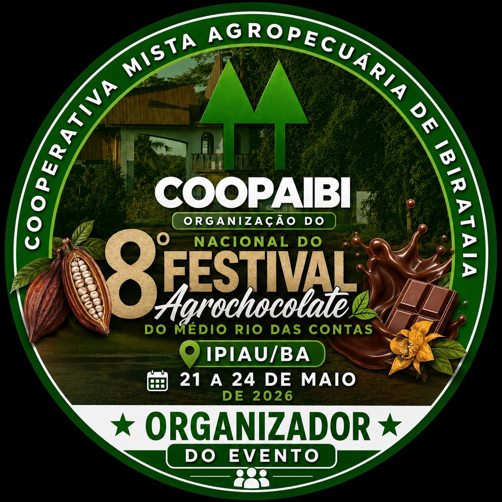

Acompanhe aqui tudo o que a COOPAIBI realiza — da organização de eventos regionais ao fortalecimento da cadeia produtiva do cacau no sul da Bahia.

A COOPAIBI participa do maior festival de cacau e chocolate da região do Médio Rio das Contas, realizado pela APROC, Prefeitura de Ipiaú e Codeter. O evento reúne produtores rurais, pesquisadores, empresas e o público em geral para fortalecer a cadeia produtiva do cacau, a agricultura familiar, o comércio local e o turismo regional, com programação completa de 4 dias em Ipiaú.
Seminário do Cacau — Do Campo à Indústria · Centro Poliesportivo Cultural Dr. Salvador da Mata · Praça Rui Barbosa — Ipiaú/BA
Sistema agroflorestal cacau-floresta restaura pastagem degradada, gera renda para 300 famílias e sequestra 21.000 tCO₂eq em 3 anos.
Saiba mais →Estrutura de 1.200 m² com capacidade de 100.000 mudas/ano. Mudas clonadas certificadas pela CEPLAC repassadas a R$ 4,00 — até 70% abaixo do mercado.
Saiba mais →Lei Municipal nº 1.298/2025 reconhece o papel social, econômico e ambiental da cooperativa para a agricultura familiar e o desenvolvimento regional.
Saiba mais →Mapeamento dos maiores importadores e processadores globais (Barry Callebaut, Cargill, Olam, Touton e outros) com dados de volume, contato e oportunidades para o cacau fino do Sul da Bahia.
Ver relatório completo →Próxima ação da COOPAIBI será publicada aqui
Próxima ação da COOPAIBI será publicada aqui
Próxima ação da COOPAIBI será publicada aqui
Seja como cooperado, parceiro institucional ou patrocinador de projeto.